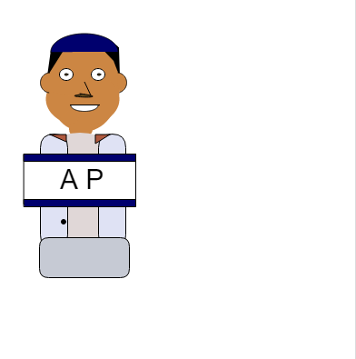
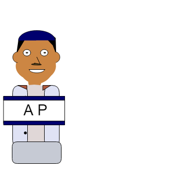
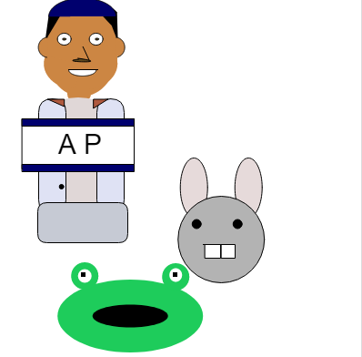
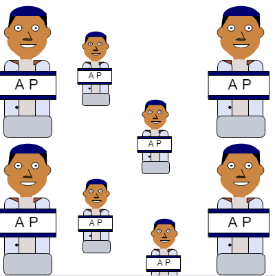
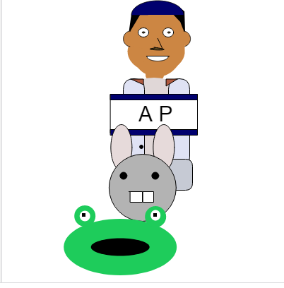
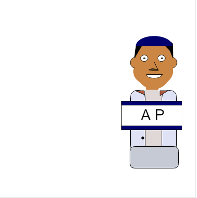
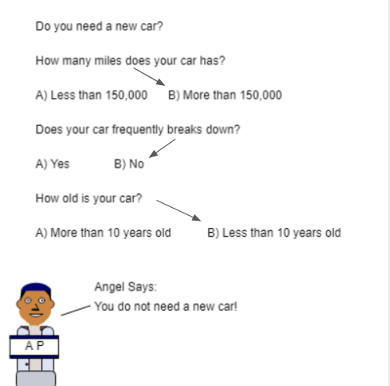
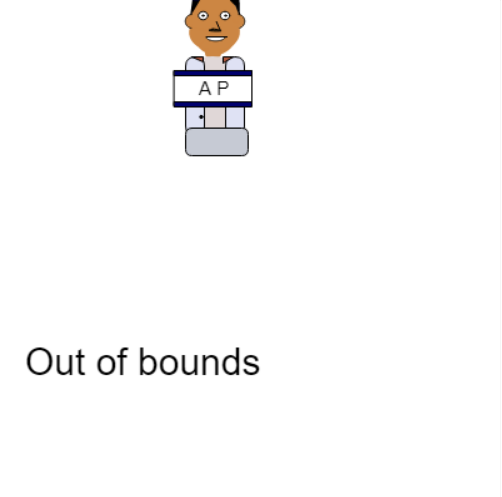

On this page, I will be posting some of my Javascripts. I will make sure that I make make this like a portfolio from begginer stuff all the way to the more hardcore stuff.
Original Bitmoji with Javascript

Original dancing bitmoji with Javascript

Original racing bitmoji with Javascript

Resizing bitmoji with Javascript

Dancing bitmoji with parameters

Racing bitmojis with parameters on Javascripts

Decision Tree. Should I buy a new car? (Javascripts)

Bitmoji follows my mouse! Written on Javascripts
